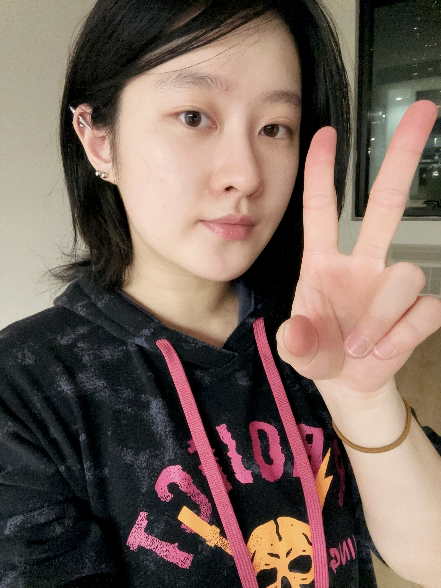
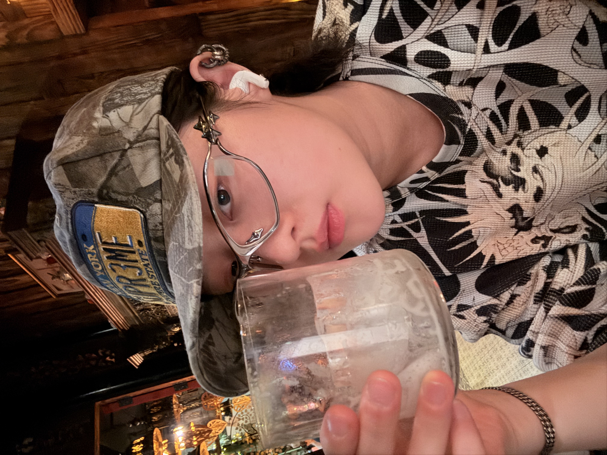

Valentine Ye
Hey there! I'm Valentine Ye, I come from China, I gained my bachelor's degree in Journalism and Communication (Public Relations and Advertising Track) in Macau University of Science and Technology, Macau SAR, CHina. Now I base in New York, NY, currently pursuing my MFA in Design and Technology at Parsons School of Design. This portfolio is mainly showcasing my works in the Critical Computational Lab course in 2025 Fall semester.

